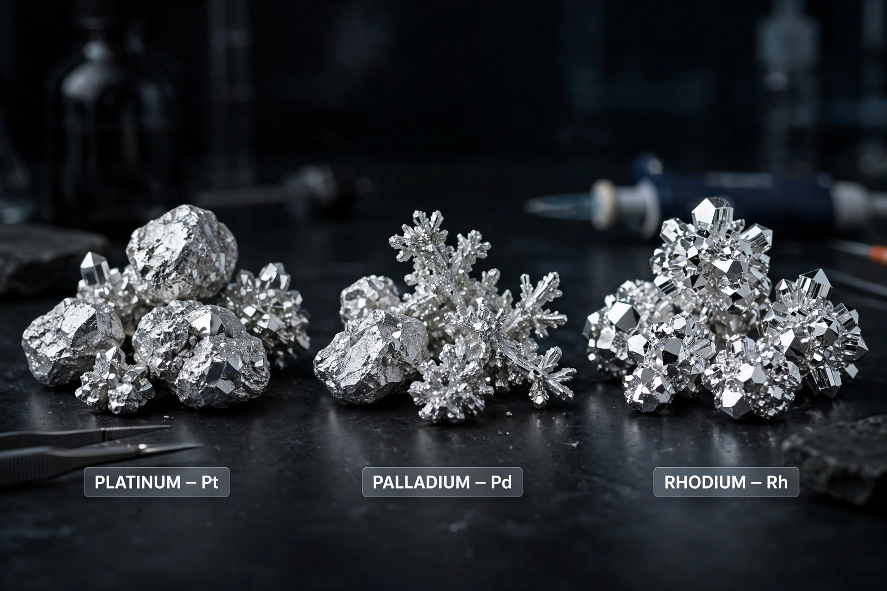

The platinum-group metals (PGMs), also called platinum group, platinoids or platidises, are six noble transition metals: ruthenium, rhodium, palladium, osmium, iridium and platinum.
| Platinum-group metals | |
|---|---|
 | |
| Elements | Ru, Rh, Pd, Os, Ir, Pt |
They share high melting points, corrosion resistance, catalytic properties and rarity. They occur together in mineral deposits, notably in South Africa's Bushveld Complex and Russia.
Platinum, palladium and rhodium are used in catalytic converters; also in jewellery, electronics, fuel cells, chemotherapy drugs and dentistry.
Platinum was used by pre-Columbian peoples and described in Europe in the 18th century; the other PGMs were discovered in platinum ores in the early 19th century.